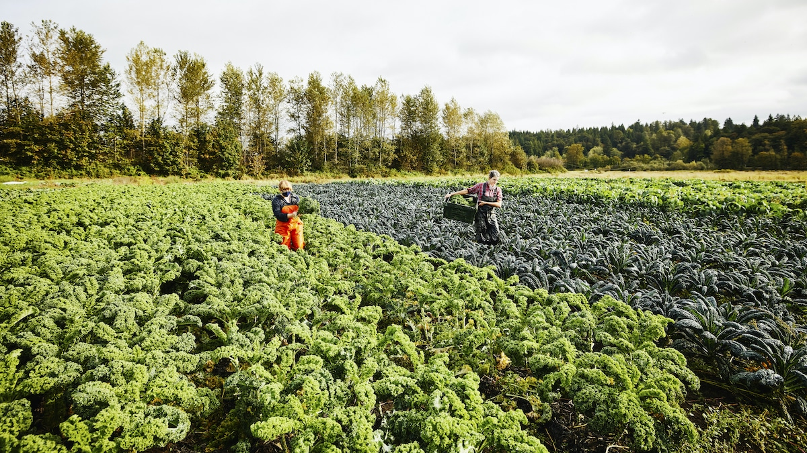
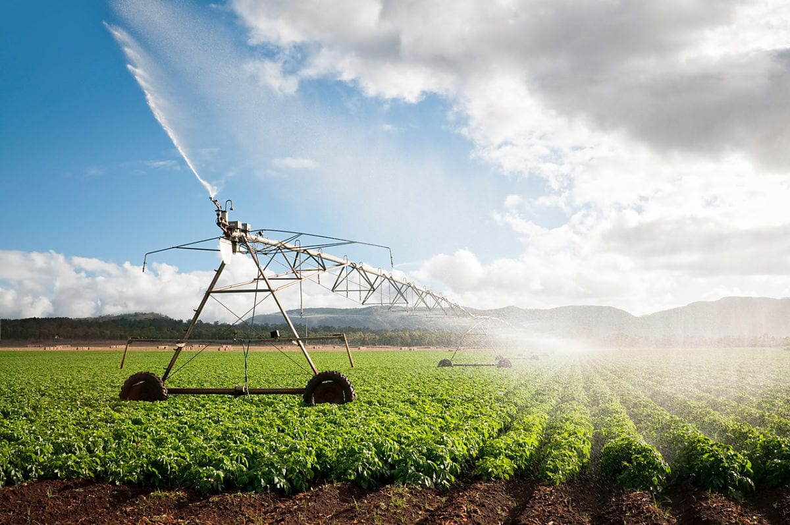

FEATURED STORIES

AGRICULTURE
New sustainable farming practices boost crop yields by 30%
Innovative techniques help farmers maximize production while minimizing environmental impact

TECHNOLOGY
Smart irrigation systems revolutionize water management on farms
IoT-powered solutions help reduce water usage while improving crop health

URBAN FARMING
Urban agriculture initiatives transform city landscapes
Community gardens and vertical farms bring fresh produce to urban food deserts